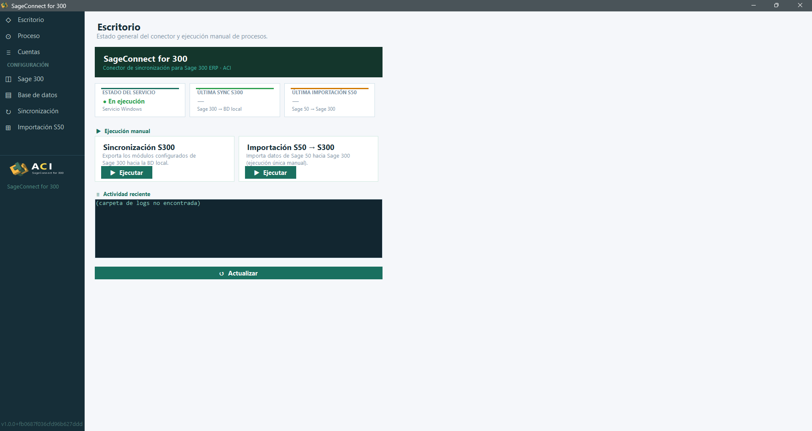
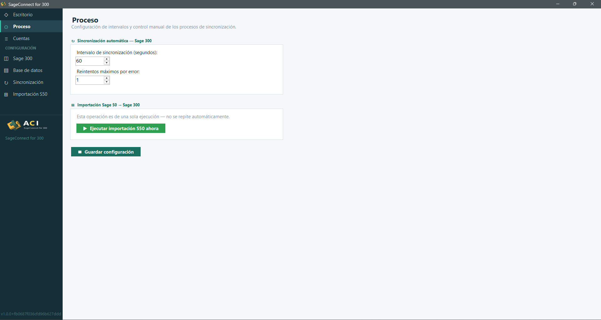

El escritorio y los intervalos
Antes de cargar catálogos conviene familiarizarse con el escritorio y entender cómo se controla la sincronización automática.
§ 01 Escritorio
El Escritorio es la pantalla de bienvenida del Manager. Reúne en un solo vistazo el estado del servicio y los accesos rápidos a las dos operaciones principales.
Bloques visibles
- SageConnect for 300 — cabecera con el nombre del conector.
- Estado del servicio — última sincronización S300 y última importación S50.
- Ejecución manual — botones para forzar sincronización o importación.
- Actividad reciente — log de las últimas operaciones.

§ 02 Proceso
La sección Proceso controla los intervalos y permite lanzar ejecuciones puntuales. Hay dos bloques diferenciados.
Sincronización automática — Sage 300
Es la sincronización periódica que lleva datos desde Sage 300 a la base de datos local. Sus parámetros son:
- Intervalo (segundos): por defecto
60. Define cada cuánto se ejecuta. - Reintentos máximos por error: por defecto
1.
Importación Sage 50 → Sage 300
Esta operación no es automática: se lanza bajo demanda desde el botón Ejecutar importación S50 ahora. Es habitual dispararla tras un cierre contable o un cambio masivo en Sage 50.
Los cambios se guardan con el botón Guardar configuración.
